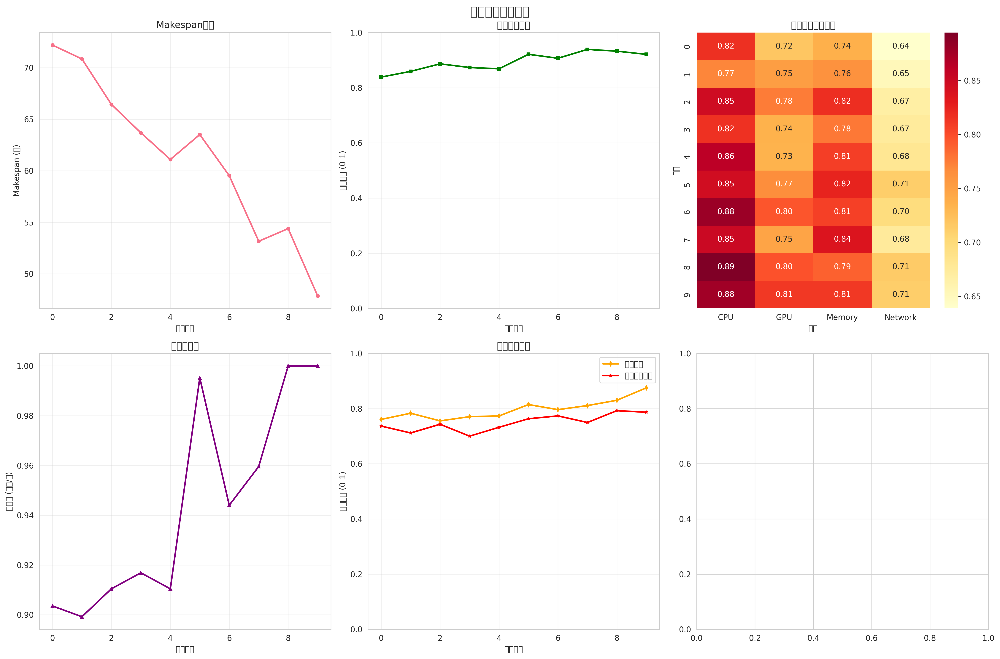
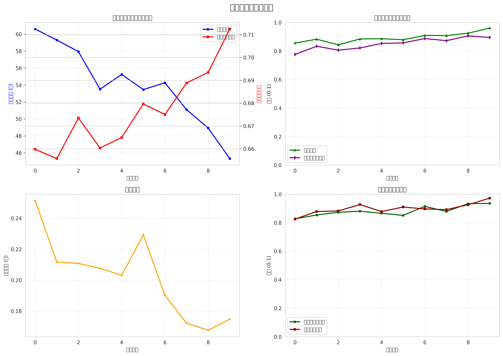
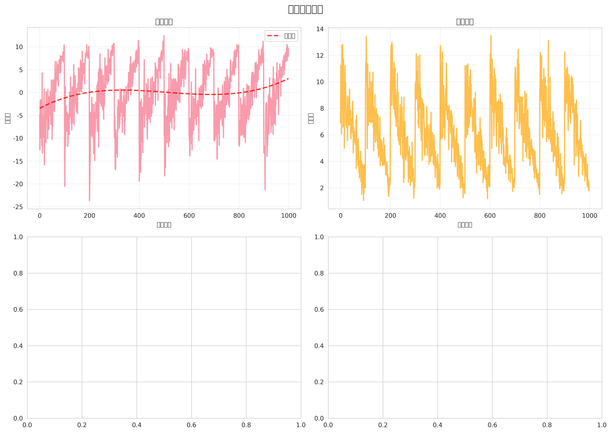
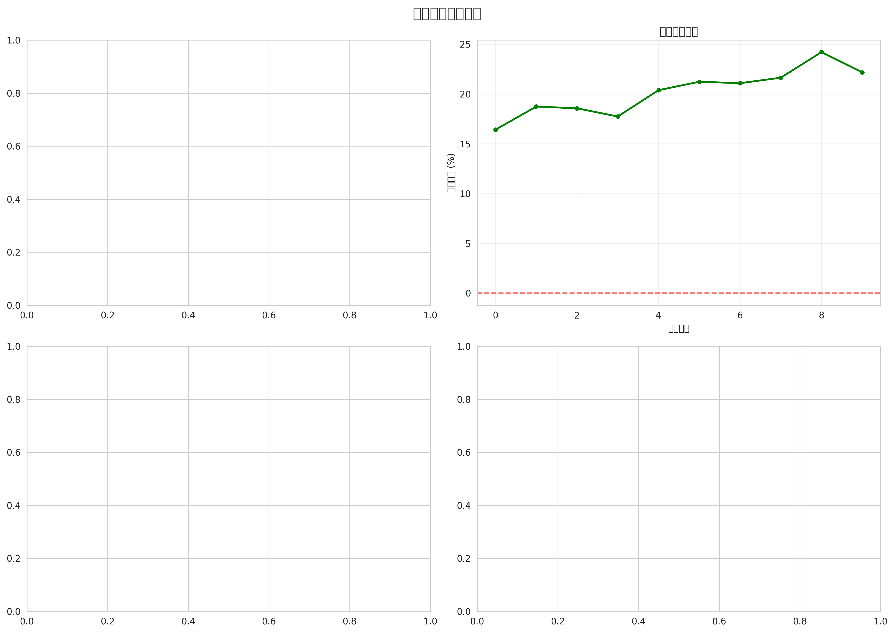

WASS-RAG 系统性能评估报告
总体评分
nan%
系统综合性能评分
系统性能概览
70.000
Makespan (秒)
0.957
负载均衡指数
0.020
能效指数
0.010
成本效率指数
0.928
公平性指数
0.950
可靠性指数
工作流调度质量
0.017
并行效率
0.800
数据局部性分数
0.850
截止时间满足率
0.900
工作流完成率
训练过程分析
1.000
收敛速度
0.226
稳定性分数
nan
探索效率
基准算法对比
17.6%
改进比例
1.214
加速比
1.133
效率比
1.000
可扩展性分数
改进建议
能效较低，建议考虑节能调度策略
并行效率不足，建议优化任务并行执行策略
截止时间满足率低，建议改进优先级调度策略
训练不稳定，建议增加正则化或调整批大小
可视化图表



